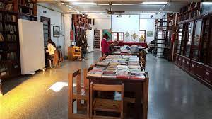
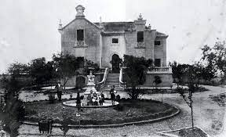
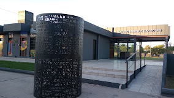

Página de Turismo
Bienvenidos a Nuestra Ciudad
Historia
Ir a la pagina
Lugares de Interés
Contacto
Nuestros lugares mas importantes en la Ciudad
monumento a San Martín
Ver ubicación
Ir a la pagina
biblioteca urquiza

Ver ubicación
Ir a la pagina
casa de la cultura villa Elisa

Ver ubicación
Ir a la pagina
museo gandolfo

Ver ubicación
Ir a la pagina
cointacto
Botón de redirección
Ir a la pagina